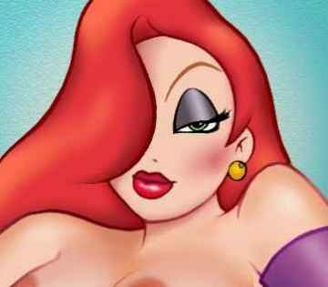

|
 
- - - - - - - - - -
Real Toons
When cartoons and humans breed, the result is a rather exotic hybrid.
- - - - - - - - - -
by Roberto
 T IS A LITTLE KNOWN FACT that the popular movie Who Framed Roger Rabbit was based on a true story. But even more startling than that, as photographer and anthropologist Roberto discovered, when humans and Toons breed together, they form a new species... a species Roberto calls "Real Toons". T IS A LITTLE KNOWN FACT that the popular movie Who Framed Roger Rabbit was based on a true story. But even more startling than that, as photographer and anthropologist Roberto discovered, when humans and Toons breed together, they form a new species... a species Roberto calls "Real Toons".
"First, I should explain that most people who see my photos for the first time think they're paintings, but that's the way these 'beings' look. As Jessica Rabbit said, 'I'm not bad, I'm just drawn that way.' In the case of the Real Toons, they're shot that way.
"I stumbled across these creatures quite by accident." explained the prurient shutter bug. "The first ones I saw were hideous creatures that were evidently the result of bestiality. These were the older ones, many of which bore a striking resemblance to Felix the Cat and some of those old Max Fleischer cartoon cows. One of the oldest freaks of nature that I found went by the name of Minnie Man. I suppose it wouldn't surprise you to learn that she looked a lot like a transsexual Walt Disney with big black ears."
Roberto paused to shudder.
"As animation became more and more realistic and life-like, the new breed of hybrids became less and less repulsive and even atractive, and yes, some you could even say are wicked sexy hot!. Unfortunately, shyness an reclusiveness is a trait nearly all of them share. Maybe it's because they're such freaks. Searching them out was not an easy task.
"The few I did find were fairly anonymous and nondescript, so ultimately I went in search of the more advanced, unusual, and more comely of these creatures. The first Real Toon babe who agreed to pose au unnatural was a shy young lass who called herself Carrie Two. Her mother was known simply as Carrie, a British toon who always accidently stumbled into situations that left her spectacularly naked in public. Evidently, she must have innocently stumbled onto some human guy's very real erect penis. My next willing model was Cheryl Noble, daughter of Cheryl Blossom (Archie comics) and some Russian physicist. But I really lucked out when I found the crown jewel of any Real Toon hunter's collection., Edie Valiant, daughter of Jessica Rabbit and Detective Eddie Valiant. And I nearly fell off my tripod when she consented to sit for my camera in the buff."
 Real Toons Slideshow Real Toons Slideshow

|